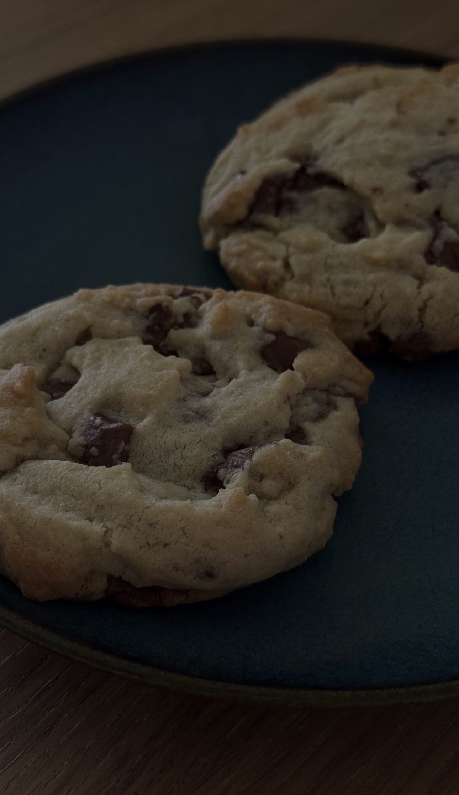
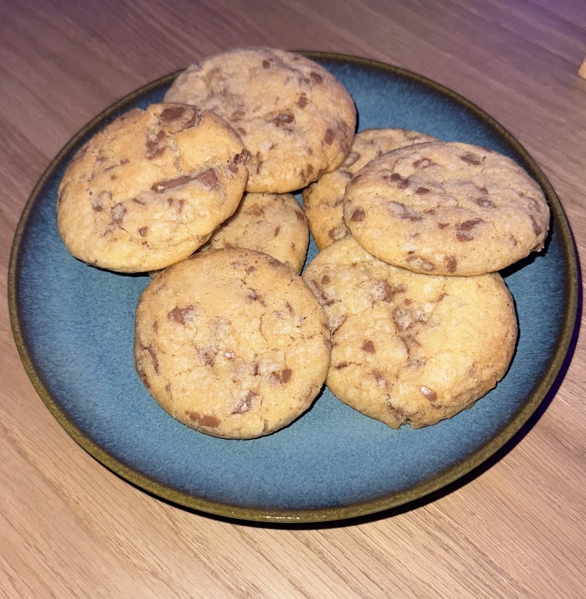
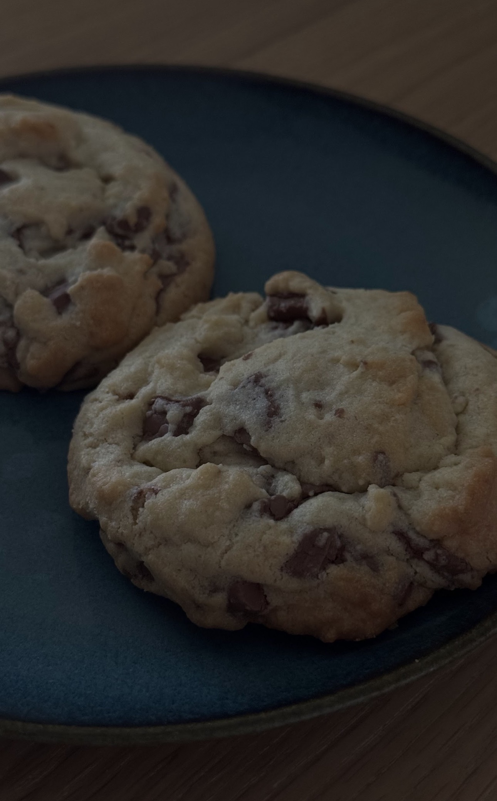

miniedles
❤︎
❤︎
❤︎
❤︎
❤︎
❤︎



Ingredients:
- 225g soft butter
- 100g white sugar
- 130g brown sugar
- 1 egg
- 1tsp vanilla extract
- 250g white flour
- 1/2tsp baking powder
- 1tsp baking soda
- 150g chocolate chips
Steps:
- Preheat oven to 180°C
- Add the soft butter, white & brown sugar into a bowl and mix until creamy.
- Add the egg and the vanilla extract to the mixture.
- After mixing, add the flour, baking powder & baking soda and fold it in.
- Fold in the chocolate chips.
- Shape them into equally large spheres and put them on a baking tray.
- Bake for 13minutes until golden brown and then let them fully cool.